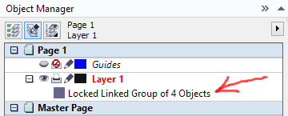

Блокировка объектов при импорте
Здравствуйте.
В Corel Draw делаю основном чертежи, а потом перевожу их в PDF и делаю документацию при помощи программы PDF Creator. Некоторое время назад чертил не особо много, а на сегодняшний день приходится в день делать по несколько проектов и создавать базу с заготовками и т. д. И связи с этим столкнулся с проблемами которые существенно влияют на работу и трепят нервы.
Самое главное это блокировка размерных линий после импорта какой либо заготовки в файл или после последующего открытия сохраненного файла. И что самое интересное объекты не разблокирываются! А при открытии файла Corel иногда ругается что файл создан вообще в другой программе.
Последовательность создаваемого мною файла:
1. Черчу все в размере используя заливки, прозрачность и тд. (Не использую растровые изображения).
2. Ставлю размеры на чертежах.
3. Копирую в этом же файле все что начертил и перевожу всё в кривые.
4. Уменьшаю что бы нужные детали влезли в подготовленный штамп (все чертежи должны быть офрмленны в нем) чертежа формата А4 и при помощи "печать" кидаю листами в PDF Creator создавая документацию.
И вот при повторном открытии этого файла или при импорте в этот файл у меня блокируются и не разблокируются уменьшенные заготовки чертежей. Я не могу их переместить на лист или удалить.
Подскажите, как решить эту проблему.
Зачем PDF-Creator, когда есть CorelDRAW?
Просто экспортируйте в PDF и всё будет.
Во первых мне нужен PDF каталог из нескольких страниц. Вопрос вообще не о PDF, а почему в файле блокируются объекты.
И в чём проблема сделать его в CorelDRAW ?
А по вопросу - какая версия CorelDRAW ?
Давайте забудем о PDF и перейдем к главной проблеме. Corel 15.
Конкретнее, какая точно версия (какое обновлеие стоит) ?
Ну и пример файла бы посмотреть...
версия 15. 1. 0. 588
пример файла во вложении
Ronin1983, а если обновиться до 15.2.0.695?
В фале забаганы голубые линии разметки (см. скрин ниже), из за них такая проблема. На самом деле там дожна быть группа. Их нужно удалить и пересоздать. Если все с нуля созданные линии сохраняются с таким багом, обновляйся до актуальной версии и пробуй в ней.

Спасибо за объяснение, а каким образом обновлять Corel? Никогда этим не занимался.
Через официальный сайт corel.com > поддержка > исправления и обновления, или через меню программы Справка > Обновления, если программе разрешён доступ в интернет.
Спасибо. Буду пытаться)